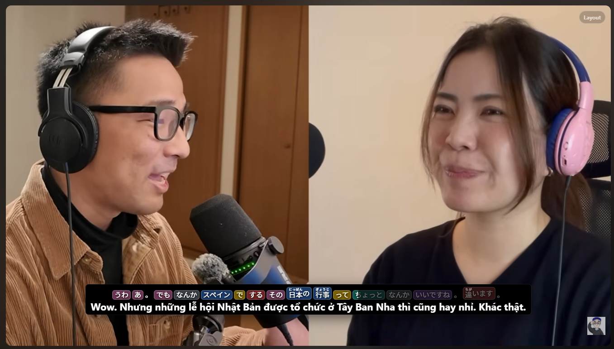
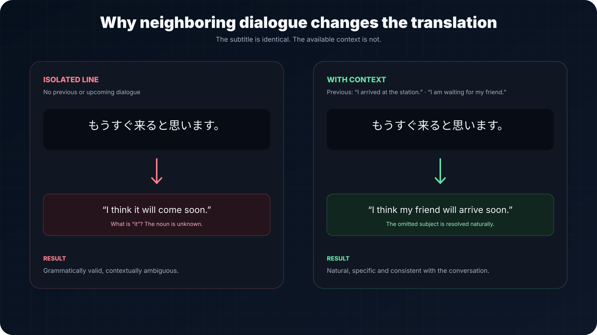
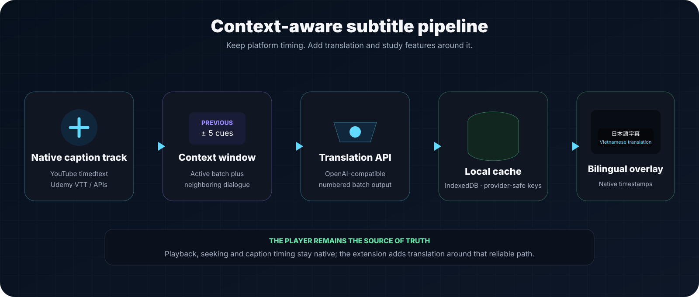
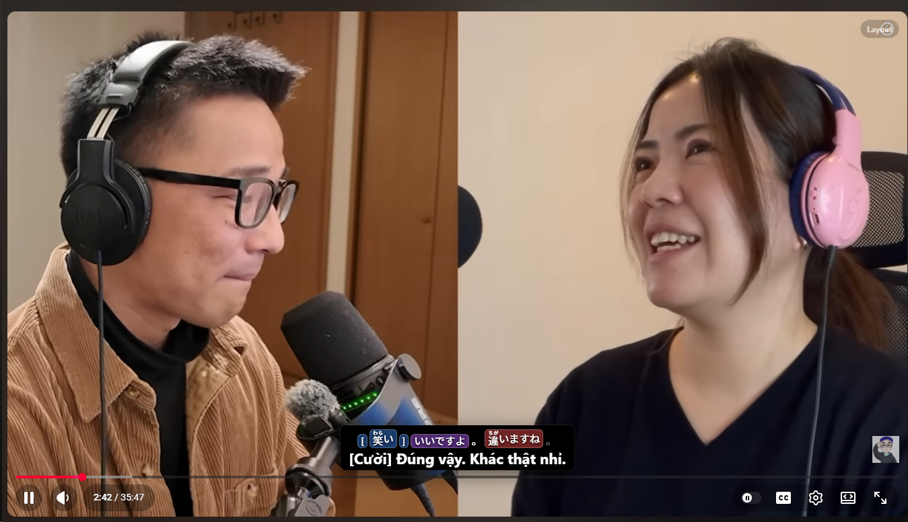
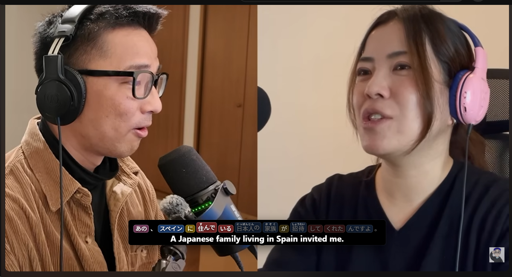
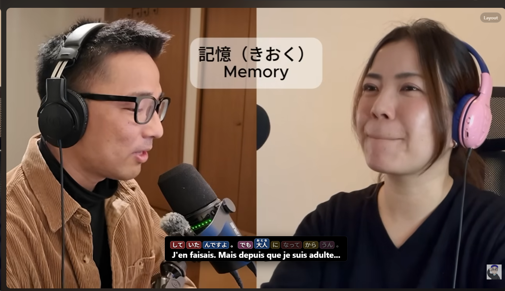
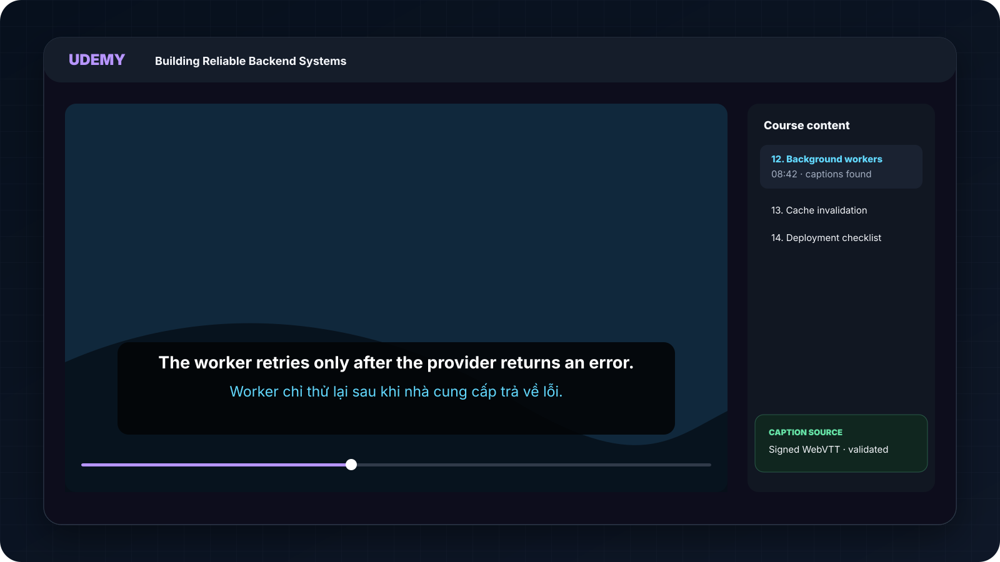
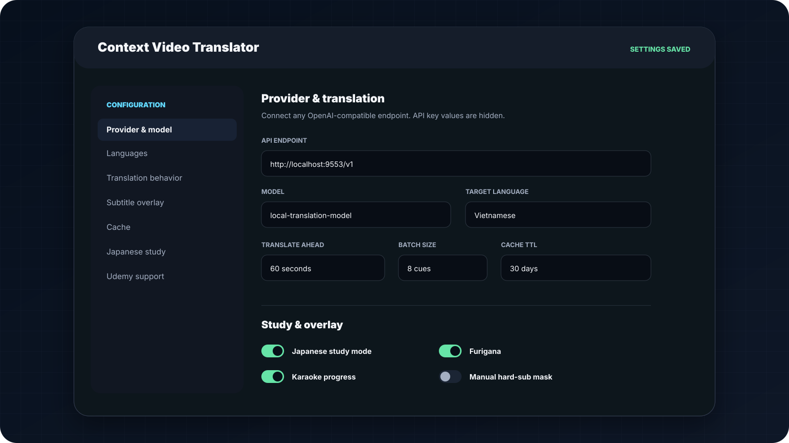
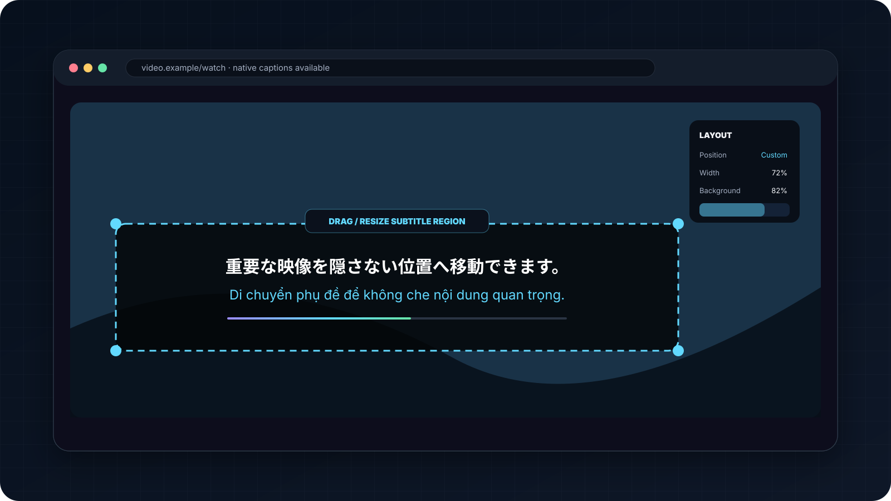

Lost context
Line-by-line translation can be grammatically valid while still choosing the wrong subject, pronoun or meaning.
A browser extension that translates native YouTube and Udemy captions with surrounding dialogue, then renders synchronized bilingual subtitles for watching and language study.

Native captions are useful, but copying each line into a translator interrupts playback and removes the surrounding conversation. Short spoken cues are especially ambiguous: pronouns, terminology and intent often depend on what was said before and what comes next.
Line-by-line translation can be grammatically valid while still choosing the wrong subject, pronoun or meaning.
Pausing, copying and switching to another tool turns a continuous video into a repetitive manual workflow.
Ordinary bilingual subtitles do not expose readings, word boundaries or which part of the line is currently spoken.

The extension captures caption data exposed by the platform, prepares upcoming cues with surrounding dialogue and sends them to an OpenAI-compatible translation endpoint. Results are cached and rendered in a bilingual overlay that follows the original playback timing.
Use YouTube timedtext or Udemy caption tracks instead of OCR, preserving the platform’s original timestamps and text.
Send the active batch with previous and upcoming cues as context to improve consistency and disambiguation.
Keep the native timeline as the source of truth while adding translation, karaoke progress and optional study annotations.

The first four visuals are original PNG screenshots imported unchanged from the extension repository. Udemy, settings and layout use clearly labeled vector reconstructions because the source repository does not yet include captured images for those views.






The extension does not recreate alignment. The platform’s caption timeline remains the source of truth for when each line appears.
Upcoming cues are prepared before playback reaches them, reducing visible waiting while still batching provider requests.
Previous and upcoming dialogue are included to improve consistency, pronoun choice and terminology across adjacent lines.
Old translations are prevented from appearing after a language switch, seek or player remount.
The repository remains the source for interception, parsing, caching, retry and platform-adapter internals.
Context Video Translator turns native caption tracks into a continuous bilingual viewing experience. Instead of replacing the video platform, it extends the existing player with contextual translation, reliable synchronization and optional language-learning tools.